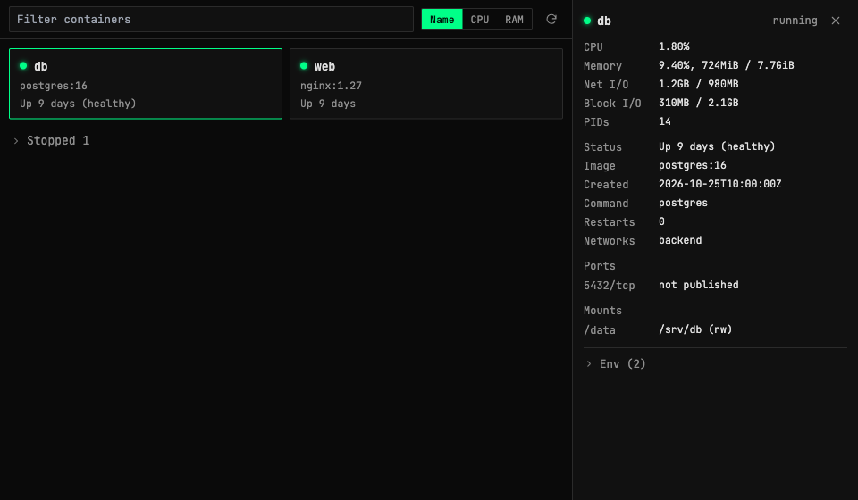
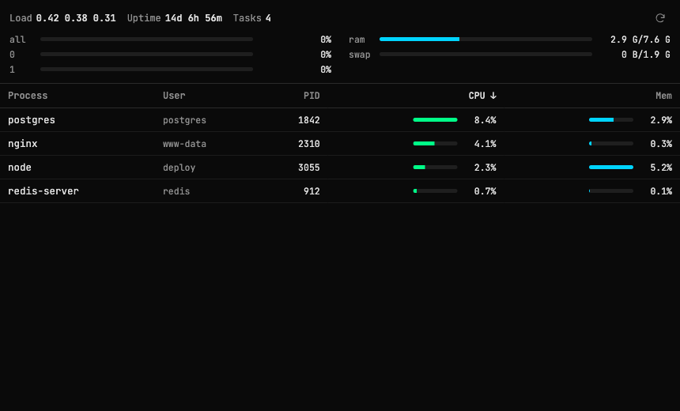

Richer Docker and htop monitoring
The Docker view gets groups, container details and sorting, and the htop view can sort processes.
Docker
Containers are split into active and stopped groups, with stopped collapsed by default. Click a container to see live CPU and RAM usage, published port mappings, mounts, networks and environment variables. A sort bar orders the list by name, CPU or RAM. Auto-refresh is gone: the list refreshes when you open the window, click ⟳ or change the sort. The plain listing runs only docker ps, so it loads much faster on small VPSes.


htop
A sort bar orders processes by CPU, memory, name or PID.


Reliability
Docker and htop are detected again on every connect, so a tool installed since your last connection shows up without restarting the app. Remote commands are no longer cut off after a hardcoded 8 seconds. Docker commands get 45 seconds, and timeout errors report how long they actually waited.